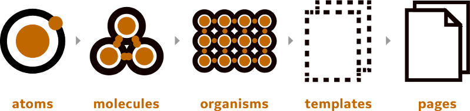
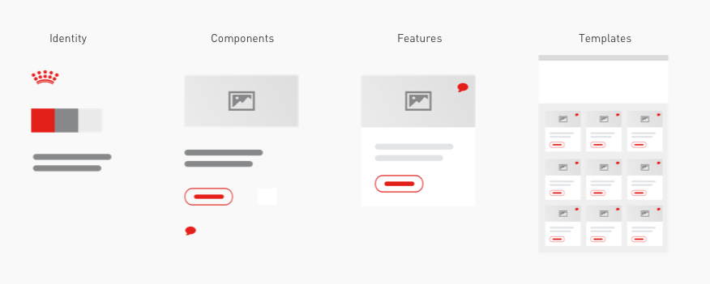

Early on in the research phase of the Web Design Project over 50 global websites were identified, catering for a vast range of markets, each with their own design interpretation and language translation. It quickly became aparent that for the Web Design Language to work, each site must be broken down into component parts.
Atomic Design
Atomic Design is a concept developed by Brad Frost that focusses on the methodology that "As the craft of Web design continues to evolve, we’re recognizing the need to develop thoughtful design systems, rather than creating simple collections of web pages."
Atomic Design essentially breaks a website down into a component set of re-uable parts called Atoms. An Atom might be a button, or a form label and input field. Each Atom would be used as a collection to create a molecule, such as a registration form made up of a form label, input field and a button. An Organism would consist of a collection of Molecules and could form a header on a website made up of a registration form, navigation, company logo and links. A Template is a collection of Molecules that begin to form a page template that a user would start to recognise as a more formalised structure they are used to. A Page would use the form of a template but start to display actual content for that page, giving a user a much better insight to what the content of the page will consist of.
Read more on the Atomic Design principle and view examples in practice.
Component Based Design
By taking the principles of Atomic Design and applying them in a less abstract way that would work for the Web Design Language application, Component Based Design aims to make a set of simple re-usable components available for every web project across all regions.
The methodology of Component Based Design relies on a base set of identity values to be establised so that each component always has a starting point. The project identity set out values such as logo use, colour palette and typfaces. Following a defined identity, components such as buttons, form elements, alerts, icons, images and social media icons can now be created. Each component is re-usable and kept simple to ensure it can be translated across market and across language. Features such as a cards, carousels, tab panels, review panels and finder tools can now rapidly be built up using the pre defined set of components. Page templates can now be built up of sets of features and components.
Iteration
The very nature of a style guide means that as new products and services are released pre existing components that fit the need might not exist. As new products are developed, new requirements will go into a feature backlog and if approved will be merged into the portal available for future use.